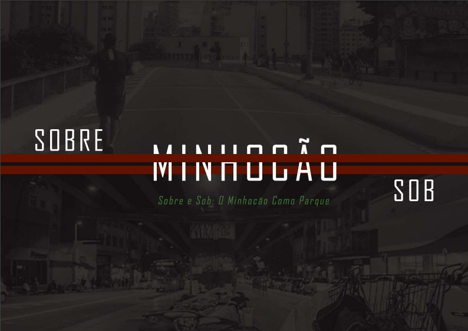
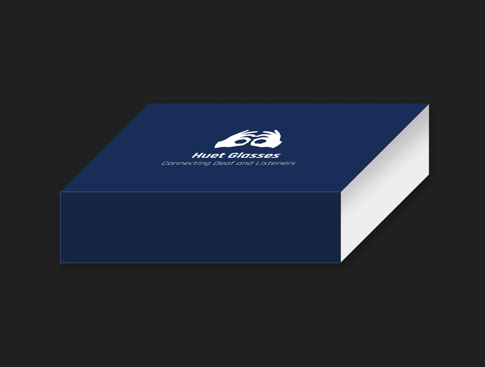

Sobre Mim
Adoro criar web templates e layouts de sites, diagramar páginas e criar logotipos e ilustrações. Possuo formação técnica no curso de Comunicação Visual na Etec Albert Einstein, finalizado em 2017. Curso o primeiro semestre de Sistemas para Internet, na FAM. Adquiro conhecimento em softwares para edição de imagens, vetorização e textos, como Adobe Illustrator, Photoshop e InDesign, além de conhecimentos em HTML, CSS e JavaScript.
Linkedin

